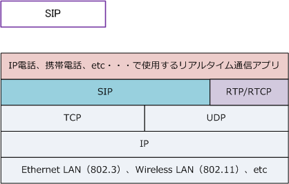
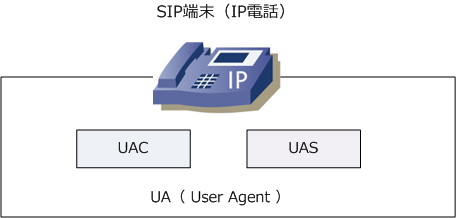
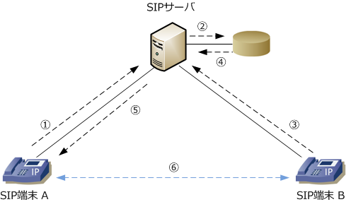
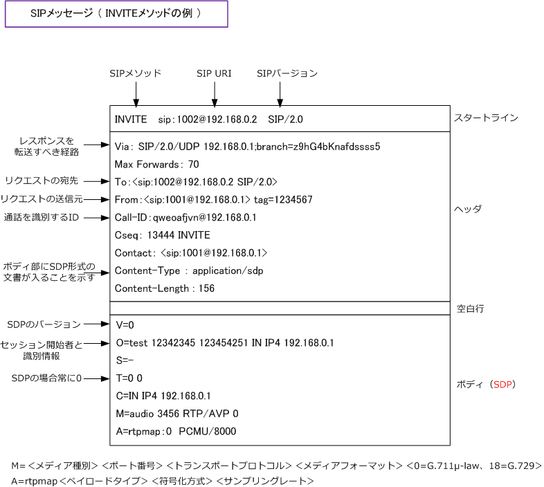
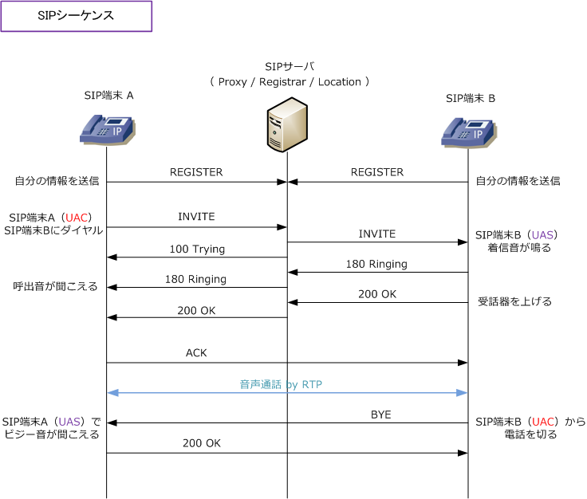

IP Telephony - SIP
SIPとは
IPパケット化された音声データはRTPでやりとりされますが、電話の発信、着信、応答、切断の呼制御は H.323、MGCP、SIPなどのシグナリングプロトコルで行います。今回は SIP に焦点をあてて解説します。
| シグナリング プロトコル |
H.323 | MGCP | SIP |
|---|---|---|---|
| 標準化団体 | ITU-T | IETF | IETF |
| 標準化時期 （最新版） |
1996年（2000年） | 1999年（2003年） | 1999年（2002年） |
| 目的 | 音声、画像のマルチメディア 通信を目的として策定 |
キャリアがIP網で電話サービスを 提供する際に使うことを目的として策定 |
Client⇔Server間で通信セッションを 開始するためのプロトコルとして策定 |
| データ形式 | バイナリ | テキスト | テキスト |
| 通信方式 | ピアツーピア | マスター、スレーブ | ピアーツーピア |
| メリット | 標準化が早く、実装製品が多い | 異メーカー機器でも相互接続性が高い | 製品への実装が容易。将来性が高い |
| デメリット | 呼制御手順が複雑、拡張性が低い | 拡張性が低い | 拡張使用の標準化が遅れている |
SIP（ Session Initiation Protocol ）
SIPは、HTTPをベースとしておりメッセージはテキスト形式ですが、SIPはトランスポート層にTCPとUDPに 対応しています（UDPがデフォルトで使用される）。従って、プロトコルの位置づけとしては以下の通りです。 ※ SIPはメディア制御は行わず、マルチメディアデータの送受信はRTP、マルチメディアセッションの記述はSDPにより行います。

SIPを使用した最低限の音声システムでは、SIPサーバとSIP UA（User Agent）の大きく2つから構成されます。 IP電話などがUAに該当しますが、リクエストメッセージを送信する側のUAC（User Agent Client）と、その レスポンスメッセージを返信する側のUAS（User Agent Server）の2つの機能モジュールで構成しています。 ※ リクエストの送信、受信がどちらになるかで、UACになるかUASになるのか決定されるため、同じUAソフトウェア内に混在する。

SIPを使用した音声システムでは、基本的には以下の流れでSIP端末同士の音声通話を実現しています。

| 順番 | 説明 |
|---|---|
| ① | SIP端末起動後、自身の電話番号、IPアドレスを含む登録メッセージ（レジストリ）をSIPサーバへ送信。 |
| ② | SIPサーバは、UAの登録情報をデータベース（ローケーションサービス）に登録。 |
| ③ | SIP端末BからAと通話するために、SIP端末Aの電話番号などを指定した発信メッセージをSIPサーバへ送信。 |
| ④ | SIPサーバはデータベース（ロケーションサービス）を検索し、電話番号に対応するIPアドレスへ発信メッセージを転送。 |
| ⑤ | 着信を受けたSIP端末Aは、SIPサーバへ応答メッセージを送り、SIPサーバは発信元へそのメッセージを転送。 |
| ⑥ | ①～⑤の手順により、SIP端末同士はメッセージに含まれたお互いにIPアドレスを知り、RTPにより直接音声通話を行う。 |
SIPサーバには、大きく以下の3つの機能があります。一般的には1つのサーバ内でこれらの機能を動かす。
| SIPサーバの3機能 | 説明 |
|---|---|
| プロキシサーバ | UACからのリクエストを、次のSIPサーバまたはUASに転送する。SIPサーバの基本となる機能。 プロキシサーバがメッセージの転送先を決めるためにロケーションサービスを使用する。ロケー ションサービス（UA情報の管理サービス）は、SIP URI に対するIPアドレス情報を格納している。 |
| レジストラサーバ | UACからのロケーションサービスへの登録を受け付けて、ロケーション登録を行うサーバ。 プロキシサーバがそのロケーションサービスを使用して、メッセージの転送先を決定する。 ※ 以上の通り、通常SIPサーバではプロキシサーバとレジストラサーバは1台で動作させる。 |
| リダイレクトサーバ | 中継することなく、他のSIPサーバやUASにSIPメッセージの転送先を教えるサーバ。大規模な ネットワークではリダイレクトサーバを配置することでSIPサーバの負荷を軽減することが可能。 |
SIPメッセージの中身

SIPメソッドと応答コード
SIPの通信は、HTTPをベースとしたリクエスト（SIPメソッド）とレスポンス（応答コード）のやりとりによって行われます。
| SIPメソッド | 説明 | SIPメソッド | 説明 |
|---|---|---|---|
| INVITE | セッション開始要求 | INFO | セッション内の情報通知 |
| ACK | セッション確立の確認 | SUBSCRIBE | イベントの通知要請 |
| BYE | セッション終了 | NOTIFY | 要請されたイベントの通知 |
| CANCEL | セッション確立のキャンセル | MESSAGE | テキストメッセージなどの送信 |
| REGISTER | 情報の登録 | UPDATE | セッションの変更 |
| OPTIONS | サーバ機能問い合わせ | PUBLISH | ステータス情報の通知 |
| PRACK | 暫定応答に対する確認 | REFER | 転送指示 |
| 応答コード | 区分 | 説明 |
|---|---|---|
| 1XX | 暫定応答 | リクエストを受信して、その処理を実行中 |
| 2XX | 成功応答 | リクエストの成功 |
| 3XX | リダイレクト応答 | リクエストを完了させるために、他リソースへの再実行を指示 |
| 4XX | クライアントエラー応答 | リクエストの誤りであるか、SIPサーバまたはUAでは処理できない |
| 5XX | サーバエラー応答 | リクエストがSIPサーバで処理できない |
| 6XX | グローバルエラー応答 | リクエストがSIPサーバまたはUAでは処理できない |
SIPシーケンス

| 順番 | 説明 |
|---|---|
| ① | 自身の電話番号、IPアドレスを含む登録メッセージ（レジストリ）をSIPサーバへ送信。 |
| ② | SIP端末AからBにダイヤルする（ SIP端末AがSIPサーバへINVITEメソッドを送信。) |
| ③ | SIPサーバはロケーションサービスで宛先の解決後、SIP端末BにINVITEメソッド送信、電話機Aには100Tryingを送信。 |
| ④ | SIP端末Bの着信音の発生後、180 RingingをSIPサーバへ送信。 |
| ⑤ | SIPサーバはSIP端末Aに180Ringingを送信。SIP端末Aで呼出音が聞こえる。 |
| ⑥ | SIP端末Bで受話器を上げると、200 OKをSIPサーバへ送信し、SIPサーバはSIP端末Aに200 OKを送信。 |
| ⑦ | SIP端末AはBのIPアドレスが分かるため、直接ACKを送信する。 |
| ⑧ | SIP端末AとBは、RTPパケットによって音声通話を直接やり取りする。 |
| ⑨ | SIP端末Bが受話器を置いて（切断して）、BYEメソッドをSIP端末Aに送信。 |
| ⑩ | SIP端末Aではビジー音が聞こえる。最終応答の200 OKを送信して終了する。 |
関連するWebRTCの通信
WebRTCでは、ICEで通信可能な経路を探す際にSTUNサーバを使い、NAT越しに見えるIPアドレスとポート番号を取得できます。直接接続できない場合は TURNサーバによる中継を候補にできます。接続先の情報を相手へ伝えるシグナリングの方式はWebRTC自体では固定されず、WebSocketを使う構成があります。WebSocketはブラウザとサーバ間の双方向通信であり、STUNとは役割が違います。